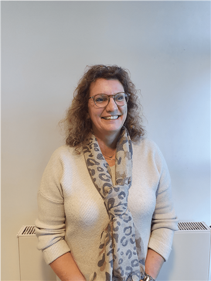
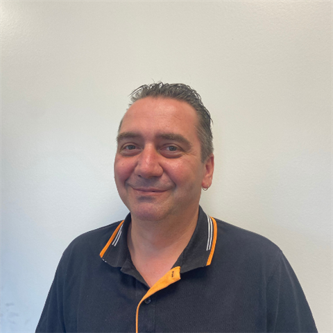
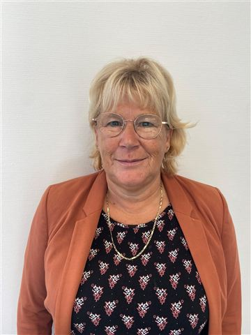
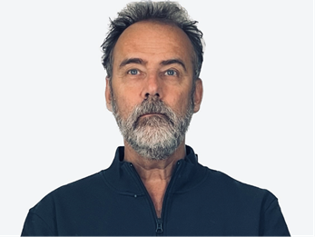

De Bresser
Over ons
Ons bedrijf bestaat al meer dan 100 jaar. We zijn in 1923 als vervoersbedrijf begonnen met paard en wagen en hebben ons in de jaren daarna ontwikkeld tot een professionele organisatie met diverse specialismen. De Bresser B.V. is lid van Erkende Verhuizers en Top Movers Nederland.
De rode draad in onze complete dienstverlening is dat we altijd gaan voor 100% tevreden klanten. Daarom is bij ons altijd afspraak = afspraak en staat eerlijkheid voorop. We zoeken naar de beste oplossing voor uw situatie en blijven onszelf verbeteren.
De Bresser wordt geleid door Tomas en Ineke Brands. Tomas heeft in 2011 de aandelen van de 3e generatie van familie de Bresser overgenomen. Samen zorgen Ineke en Tomas ervoor dat de persoonlijke benadering en de kwaliteit van onze dienstverlening hoog in het vaandel staan! Tomas in de rol van Algemeen Directeur en Ineke speelt een belangrijke rol bij de binnendienst.

De Bresser in cijfers
- 1923begonnen met paard en wagen in Oisterwijk
- 100+jaar ervaring
- ±80mensen in onze magazijnen en onderweg
- 100%tevreden klanten, afspraak = afspraak
Geschiedenis
Geschiedenis
De Bresser Verhuizingen BV – Top Movers is ontstaan doordat de zonen Jan en Nico de Bresser in 1983 het bedrijf van hun vader Jan de Bresser hebben overgenomen. Jan de Bresser was een verhuis- en transportbedrijf dat was opgericht door Cis de Bresser in 1923, toentertijd gevestigd aan de Joh. Lenartzstraat te Oisterwijk. Tegenwoordig zitten wij gehuisvest aan de Schijfstraat 13 te Oisterwijk. Dit is parallel aan het spoor, tegenover het station.
De Bresser is Erkende Verhuizer. Dit betekent dat u kiest voor een betrouwbaar verhuisbedrijf. Iedere Erkende Verhuizer voldoet namelijk aan alle eisen die zijn opgelegd door de Organisatie voor Erkende Verhuizers. Zo bent u zeker dat al onze medewerkers vakbekwaam zijn zodat uw spullen verantwoord verhuisd worden. Denk hierbij aan aan de veiligheid, uw inboedel en het milieu.
- 1923Cis de Bresser richt het verhuis- en transportbedrijf op aan de Joh. Lenartzstraat te Oisterwijk.
- 1983De zonen Jan en Nico de Bresser nemen het bedrijf van hun vader Jan de Bresser over.
- 2011Tomas Brands neemt de aandelen van de 3e generatie van familie de Bresser over.
- De Bresser bestaat 100 jaar!Vandaag gehuisvest aan de Schijfstraat 13 te Oisterwijk, tegenover het station.
Ons team
Ons team
Maak kennis met het team van De Bresser. Ons team bestaat uit enthousiaste en toegewijde medewerkers, die stuk voor stuk sterk zijn in een eigen specialisme. Hieronder vind je de mensen die bij ons op kantoor werken. Naast deze enthousiaste medewerkers zijn er ook nog ± 80 mensen in onze magazijnen en onderweg werkzaam.
-
Tomas Brands
Algemeen DirecteurTomas heeft in 2011 de aandelen van de 3e generatie van familie de Bresser overgenomen. Tomas zijn taken zijn de grote zakelijke verhuizingen en het beheer van contracten.
-
Ineke Brands
Ontzorgd VerhuizenIneke heeft haar eigen bedrijf Ontzorgd Verhuizen Noord-Brabant, waar ze erg druk mee is. Vaak ondersteunt ze De Bresser met taken in de buitendienst en zorgt ze voor de attenties.
-
Aafke Smetsers
BinnendienstAafke is een echte administratieve duizendpoot en verantwoordelijk voor de afdeling binnendienst.
-
Danique van Kimmenaede
BinnendienstDanique is, samen met Aafke, verantwoordelijk voor de binnendienst en ondersteunt de HR-afdeling.
-
Patrick van Loon
BuitendienstPatrick gaat langs bij particulieren om de inboedel te inventariseren. Naar aanleiding van een ronde in het huis en de wensen en behoeftes van de bewoners, maakt Patrick een vrijblijvende offerte op.
-

Jeanine Schoenmakers
FinancieelDit is Jeanine Schoenmakers, financieel administratief medewerker. Jeanine is verantwoordelijk voor de facturatie en het debiteurenbeheer.
-
Carla van Roessel - De Bresser
FinancieelCarla is administratiemedewerker en zij is verantwoordelijk voor de controle van alle uren die gemaakt worden bij De Bresser, zij kijkt of dit klopt en voert deze verder in.
-
Tatjana Ihnatava
FinancieelTatjana is werkzaam op onze financiële afdeling en zij is verantwoordelijk voor het verwerken van de schades.
-

Eric van der Schans
OperationeelEric is all-round planner. Zijn taken omvatten het maken van de planning voor de particuliere en zakelijke verhuizingen. Daarnaast is hij directe leidinggevende voor alle operationele medewerkers en is hij verantwoordelijk voor de verbeterprocessen intern.
-
Niels van Gestel
OperationeelNiels is buitenlandplanner: hij maakt de planningen, houdt contact met buitenlandse agenten en hij is verantwoordelijk voor de import en export van dossiers. Niels geeft direct leiding aan het team buitenland en is het eerste aanspreekpunt.
-
Aaron Mutsaers
OperationeelDit is Aaron Mutsaers, International Move Coördinator – Client Desk. Aaron is verantwoordelijk voor het klantencontact met alle buitenlandse agenten en de aansturing van buitenlandse teams.
-
Femke van Hamond
PersoneelszakenFemke is HR-manager en zij is daarmee verantwoordelijk voor de personeelszaken en loonadministratie.
-

Yvonne de Bresser
KAM CoördinatorDit is Yvonne de Bresser. Yvonne is verantwoordelijk voor ISO, OEV en EPV Certificering, interne en externe hygiëne controles en de controle van gebouwen.
-

Henry Stolk
OperationeelDit is Henry, International move coördinator. Henry, die onze internationale agenten als geen ander serviced en verder uitbreid.
-
Barry Brocken
Sales & operationsBarry is gestart als Sales & Operations en houdt zich bezig met het opnemen en uitwerken van (zorg)verhuizingen en de dagelijkse operationele ondersteuning.
-
Betty Brocken
Verkoop binnendienstBetty Brocken is werkzaam op de verkoop binnendienst. Zij ondersteunt klanten en collega’s bij aanvragen, offertes en planning, en zorgt voor een soepel verloop van het verkoopproces.
-
Ahmet Cavuslu
Stagiaire assistent plannerAhmet Cavuslu is bij ons gestart als stagiair assistent planner. Met zijn inzet draagt hij bij aan een soepel verloop van de planning en de dagelijkse operatie.
-
Dani van der Schans
Junior plannerDani van der Schans is gestart als junior planner. In deze rol houdt hij zich bezig met het up-to-date houden van de planning, het ondersteunen van de dagelijkse operatie en het voorbereiden van werkzaamheden, zoals het klaarzetten van de emballage loods.
Werken bij De Bresser
Word onderdeel van ons team
Een stabiel familiebedrijf met bijna 100 jaar ervaring, een hecht team met een nuchtere, gezellige werksfeer en doorgroeimogelijkheden. Bekijk onze openstaande vacatures.
Bekijk vacatures
Benieuwd wat wij voor u kunnen betekenen?
+31 (0)13 52 82 372 · info@debresser.nl · Schijfstraat 13, 5061 KA Oisterwijk